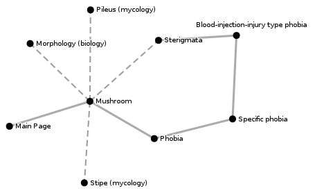

Firefox extension for recording traversal of Wikipedia.
View the Project on GitHub ryansturmer/citation_needed
You could be using this extension right now! Just click the button below to install. You don't even have to restart your browser!
Citation needed is a simple firefox extension that records your traversal of Wikipedia. Currently the graph is displayed in the browser. There are future plans to allow for exporting it, in a variety of formats.

The Citation Needed extension was developed for Ryan and Johnny's Podcast which is a very serious podcast that covers topics read on Wikipedia.
Just click the button on the left to install the extension. Mozilla browsers only!
Having trouble? There isn't really any documentation, but if you like, you can contact me directly